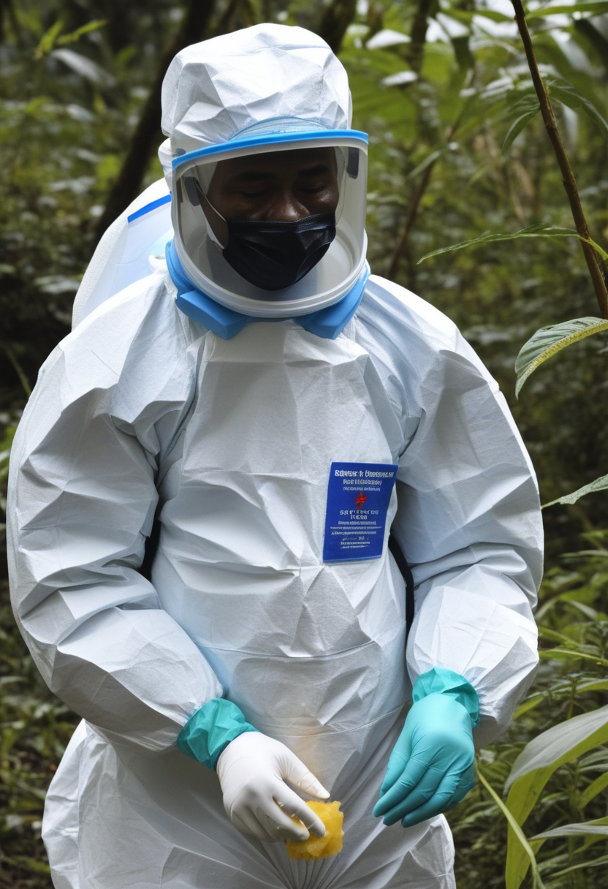
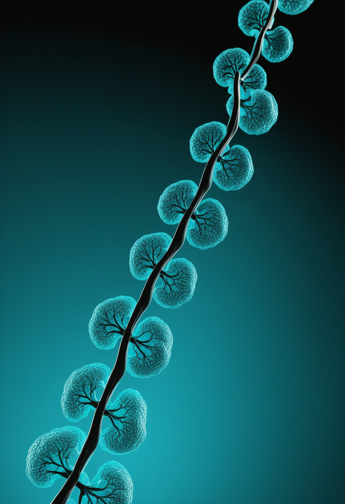
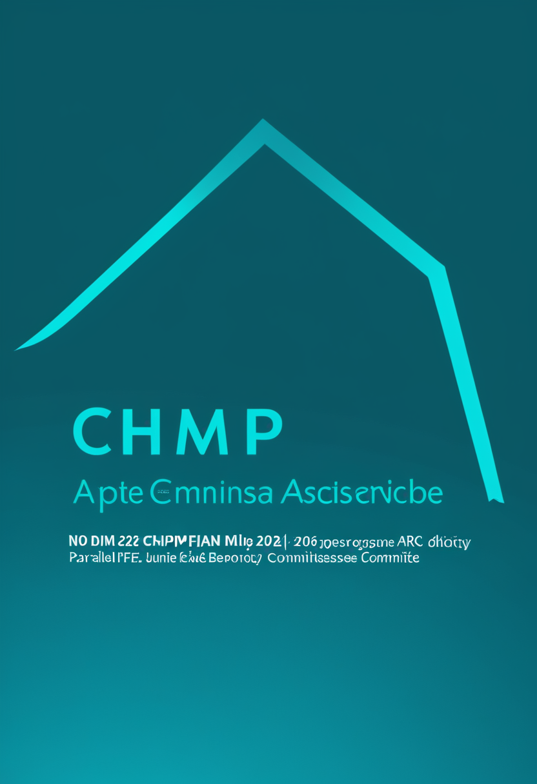
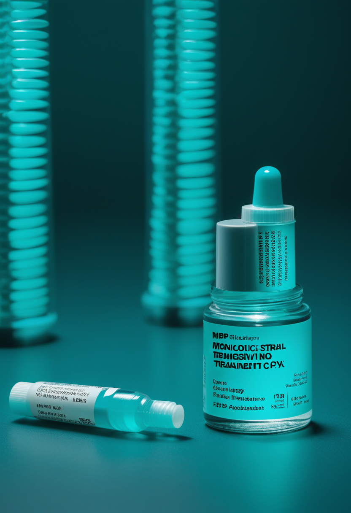
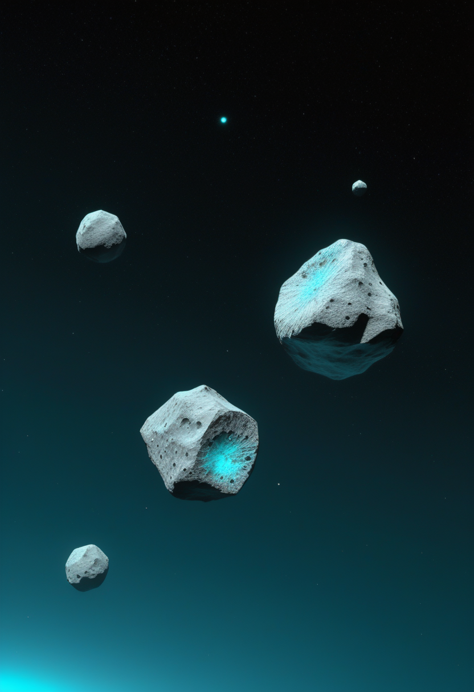
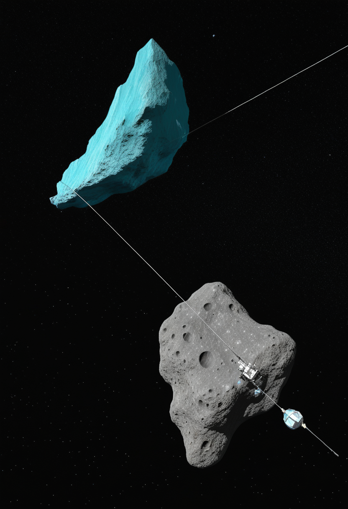
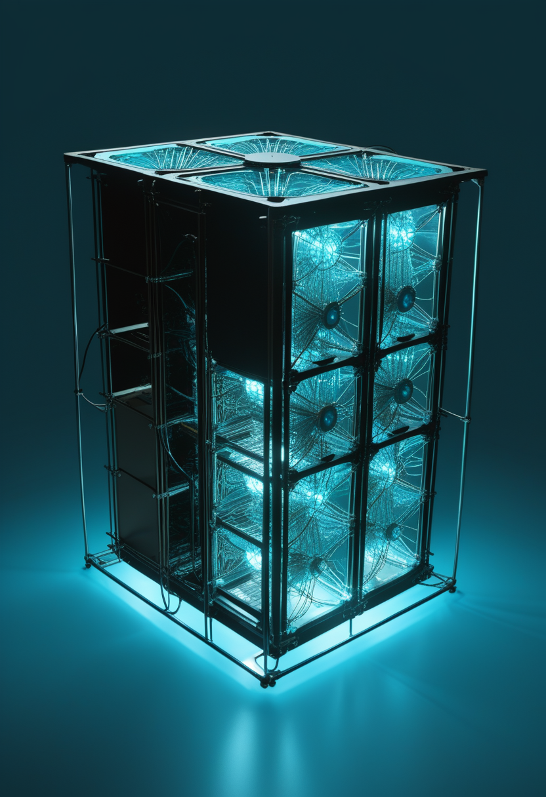

水曜日の便り。コンゴ民主共和国(DRC)のブンディブギョ型エボラは確定1,561例・死者506例まで拡大し、WHO駐DRC代表は「収束したとは言えない」と述べた。ワクチンも治療薬も存在しないこの株に対し、7月2日にモノクローナル抗体MBP134とレムデシビルを比較する初めての臨床試験が始まり、医療従事者のストライキ懸念も浮上している。宇宙では、はやぶさ2が小惑星トリフネへの超近接フライバイに成功し、画像から2つの天体が融合した「雪だるま型」の接触二重小惑星と判明。天問2号はカモオアレワで3方式から試料採取法を選ぶ段階に入り、量子コンピューターは素粒子物理の難題「ハドロン化」の再現に成功した。BCIの世界ではこの2年で埋込患者数が67人から約150人へ倍増したとの分析が報告され、SMAの世界ではサラネルセン(BIIB115)のPhase 1b追加データが神経障害マーカーの75%減少を示した。
コンゴ民主共和国(DRC)政府発表(7月4日時点)によると、ブンディブギョ型エボラの確定例は1,561例・死者506例に達し、WHO駐DRC代表アン・アンシア博士は「収束していると言いたいが、まだそうは言えない」と述べた。医療従事者は未払い手当や労働環境の悪化を理由にストライキも辞さない構えを見せる一方、7月2日にはこの株に対する初めての比較臨床試験(モノクローナル抗体MBP134とレムデシビル)が始動し、ワクチンも治療薬も存在しなかった疾患に初めての選択肢が生まれるかが焦点となっている。同じ週、はやぶさ2は小惑星トリフネへの超近接フライバイに成功し、画像から2つの小天体が融合した「雪だるま型」の素顔を明らかにした。

バイオジェンは3月11日のMDA臨床・科学会議で、遺伝子治療後も反応不良だった小児患者にサラネルセンを投与したPhase 1b追加データを発表した。6か月時点で神経障害マーカーのニューロフィラメント軽鎖(NfL)が約75%減少し、24人中12人が新たな運動マイルストーンを達成した。年1回投与で足りる新規化学設計を採用し、6月4日にはFDAの画期的治療薬(Breakthrough Therapy)指定も取得、80mg年1回投与のPhase 3プログラムが世界で進行中。

筋肉そのものへの作用を狙う初のSMA治療候補アピテグロマブは、米FDAが優先審査済み(PDUFA 2026年9月30日)、欧州医薬品庁(EMA)も販売承認申請(MAA)を受理しCHMP(医薬品委員会)の意見を「2026年央」に見込んできた。しかし6月22〜25日の直近CHMP会合の議題にも名前は上がらず、7月に入った現在も正式な意見公表は確認できていない。
サラネルセンは臨床データで、アピテグロマブは審議の長期化という形で、それぞれ規制のプロセスの「中身」が見え始めた一週間。
MIT Technology Reviewの分析によると、2023年末時点で21の研究グループ・67人だったBCI臨床試験の参加者数は、この2年で倍増し約150人規模に達した。Neuralinkは21人に電極を埋め込み、上海Neuracle社の「NEO」は世界初の侵襲型BCI医療承認を取得。BrainGateは「ポイント&クリック」型の操作から音声デコーディングへと軸足を移しつつあり、ALS患者ケイシー・ハレル氏は実生活での音声合成精度92%を保ちながら環境問題の専門職にフルタイムで復帰している。
個社ごとの進捗を追ってきた本紙にとって、業界全体で患者数が2年で倍増したという集計は、BCIが「実験」から「産業」へ移行しつつあることを裏付ける数字。
コンゴ民主共和国(DRC)政府発表(7月4日時点)によると、ブンディブギョ型エボラの確定例は1,561例・死者506例・回復254例に達した。WHO駐DRC代表アン・アンシア博士は「収束していると言いたいが、まだそうは言えない」と述べ、感染はイトゥリ・北キブ・南キブの3州に拡大中。医療従事者は未払い手当や労働環境の悪化を理由にストライキも辞さない構えを見せ、対応体制の維持が新たな火種となっている。

ワクチンも治療薬も存在しなかったブンディブギョ型エボラに対し、7月2日、モノクローナル抗体「MBP134」と抗ウイルス薬レムデシビルを単独または併用で投与し生存率改善効果を比較する臨床試験がついに始動した。1,200回分超の投与量が確保されており、初めての治療選択肢が生まれるかが焦点となる。
死者数が500人を越えてなお医療従事者のストライキ懸念という新たな不確実性が加わった一方、この株に初めての治療薬候補が試される段階に入ったことは、数少ない前向きな材料。

JAXAの「はやぶさ2」拡張ミッションは7月5日18時30分(JST)、小惑星トリフネへ相対速度秒速約5.3kmで最接近距離約800mまで迫る超高速フライバイを実施し成功、探査機の正常運用も確認された。取得画像の解析から、トリフネは2つの小天体が融合した「雪だるま型」の接触二重小惑星であることが判明。事前推定とは異なる素顔が明らかになったこの技術実証は、将来の惑星防衛(小天体の軌道逸らし)技術への応用も期待されている。

中国国家航天局(CNSA)は7月6日、天問2号が高度20km地点から撮影したカモオアレワの初画像を公開した。今後は数か月かけて段階的に高度を下げながらマッピング観測を進め、ホバリング吸引・タッチアンドゴー・アンカーで固定して掘る「アンカー&アタッチ」という3方式の中から試料採取法を選定する計画で、小惑星でのアンカー固定方式への挑戦は世界初となる。

米ローレンス・バークレー国立研究所の研究者は、IBMの156量子ビット「Heron」プロセッサ上で104量子ビットを用い、クォーク間のグルーオン紐が切れて新たなクォーク対を生む「ハドロン化(弦の破断)」過程を簡易的にシミュレーションした。結果は既存の古典スーパーコンピューター計算と一致し、グルーオン紐の中央部が分離前に有限温度ガスのように振る舞う可能性も再現、量子コンピューターが素粒子物理の難問に挑む新たな一歩となった。
日中の探査機がそれぞれ「近接飛行の結果判明」と「試料採取準備」で異なるフェーズの小天体探査を進める同じ週に、量子コンピューターは素粒子物理の未解決問題に挑み始めた。
バージニア大学のジャック・ヴァン・ホーン教授(データサイエンス・心理学)らは、個人の脳構造と機能を模した計算モデル「認知デジタルツイン」の研究レビューを発表した。てんかん研究では患者固有の脳シミュレーションで発作の起源を特定し手術判断を支援する応用が進み、神経変性疾患のモデリングや脳刺激療法の最適化にも探索が広がる。ヴァン・ホーン氏は「生きた進化する計算モデルの脳」と説明する一方、現在のモデルは「単なる数学モデル」であり意識を持つ複製とは程遠いと釘を刺す。
「脳のデジタルツイン」は臨床応用の足場を着実に固めつつある一方、研究者自身が「意識の複製ではない」と釘を刺す姿勢に、技術と哲学の間の健全な緊張関係が表れている。
2026年7月8日、コンゴ民主共和国のブンディブギョ型エボラは死者506人という重い数字を刻んだ。だが同じ日、ワクチンも治療薬も持たなかったこの株に、初めての比較臨床試験という小さな灯りがともった。宇宙では、はやぶさ2が超近接フライバイの末にトリフネの「雪だるま型」の素顔を明かし、天問2号はカモオアレワでの試料採取法の選定という次の一歩に踏み出した。量子コンピューターは素粒子物理の難題に挑み、脳のデジタルツインはてんかん手術支援という現実の医療へと着実に歩みを進めている。BCIの世界では、埋め込まれた患者の数がこの2年で静かに倍増した。遠い天体の素顔を確かめる手と、目の前の命を救おうとする手が、今週もまた同じ朝に並んでいる。
では、また明日の朝に。 — JaH